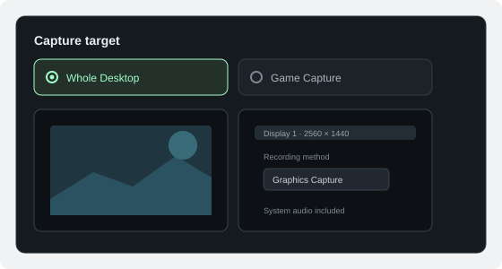
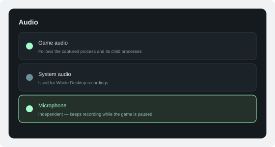
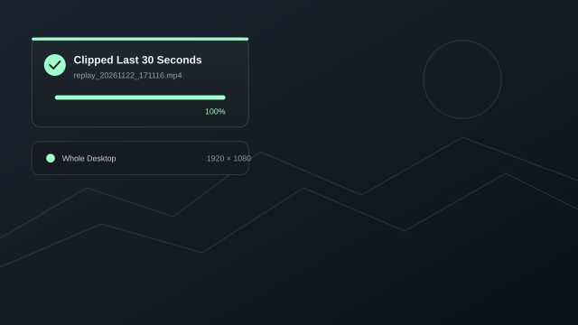
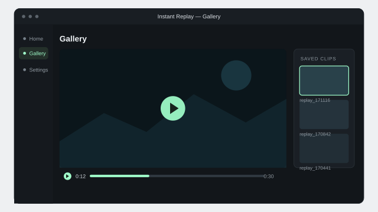
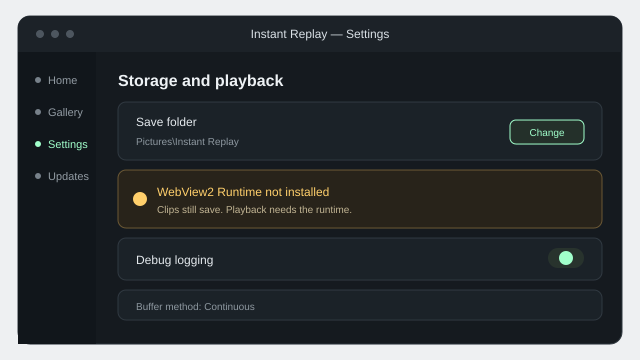
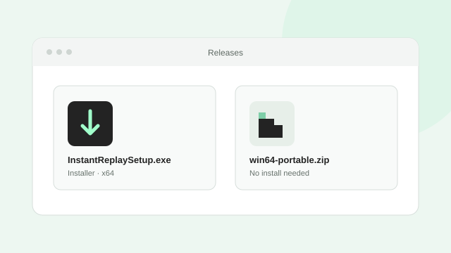

Whole Desktop capture target
Capture one monitor with system audio. Pick Windows Graphics Capture or DXGI desktop duplication and show or hide the pointer.

Press one hotkey and Instant Replay keeps the last 30, 60 or 120 seconds as an MP4. It follows a game from windowed to fullscreen and keeps the audio in sync.
Home shows the recording status and hotkey. Gallery plays saved clips with seeking, volume and “show in folder”.
See the three stepsCapture one monitor with system audio. Pick Windows Graphics Capture or DXGI desktop duplication and show or hide the pointer.

Recognise 8,460 games from 8,967 executable rules. Window and fullscreen modes feed one buffer without restarting.
Game audio follows the captured process. The microphone records independently, so speech stays aligned when a game pauses.

Protected titles are never injected and keep Windows Graphics Capture. If the list cannot load, injection stays off.
Recording starts when the app opens. It holds the last 30, 60 or 120 seconds in memory, capped at 512 MB of video.
Ctrl + Numpad * saves the buffered seconds. The MP4 lands in Pictures\Instant Replay or the folder you chose.

Play inline or fullscreen, seek, adjust volume and reveal the file in Explorer. F switches views; Escape returns.

Whole Desktop and Game Capture write the same MP4 with AAC audio.
The things people ask before the first replay.

No. .NET Framework 4.8 is already present on supported Windows systems.
No. WebView2 is only for playing clips in the app; saving works without it.
Exclusive fullscreen uses DXGI. If WGC returns a black frame, use Whole Desktop or borderless mode.
Pictures\Instant Replay by default. You can set a different folder in Settings.
A free download for Windows 10 version 2004 or later, x64.

Installs the full app under Program Files and keeps settings and saved replays on update.
The complete payload with no installer. Unpack it anywhere and run InstantReplay.exe.